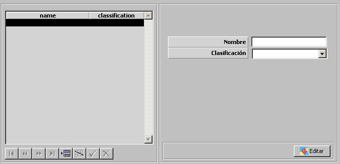

Zonas ROE

Mediante esta tabla se especifican las Zonas ROE que podrán ser seleccionadas para la definición de condicionantes y autorizaciones ROE. Ver apartados Preparación – Modelos Básicos – ROE – Condicionantes y Autorizaciones.
Editar: Mediante este botón se abre la ventana de Preparación de Escenarios, sobre la que se mostrará una herramienta de dibujo con la que se podrá especificar gráficamente la Zona ROE.